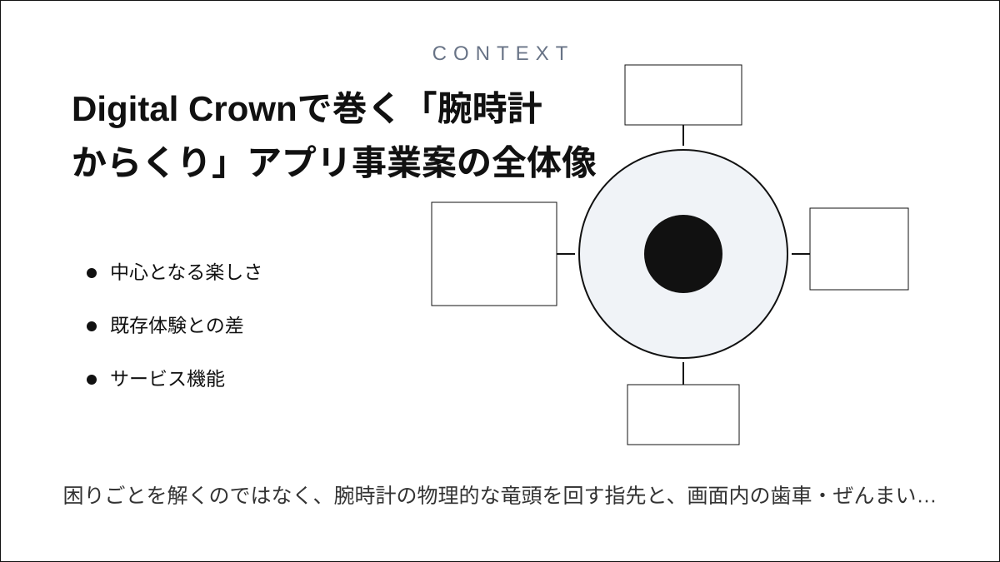
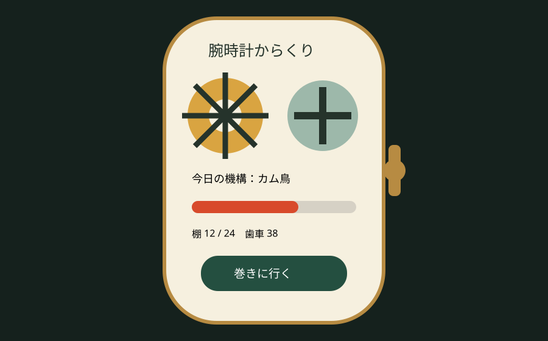
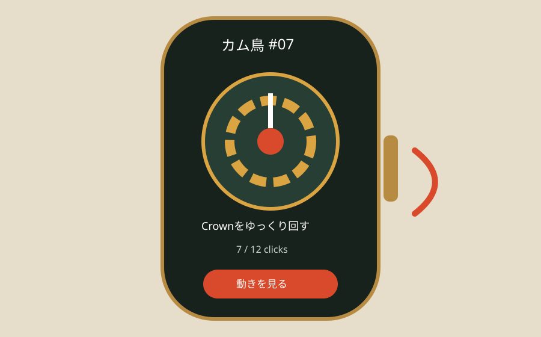
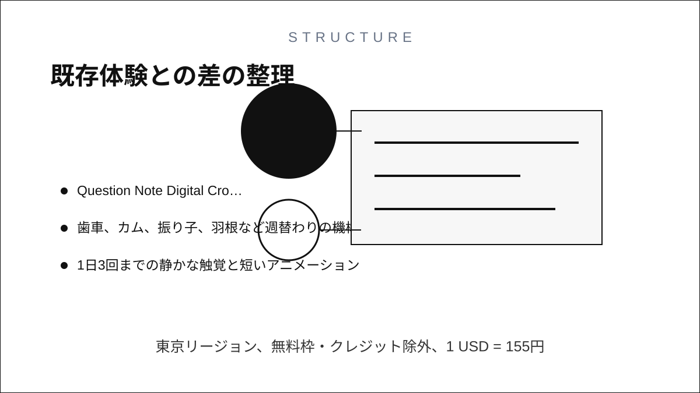
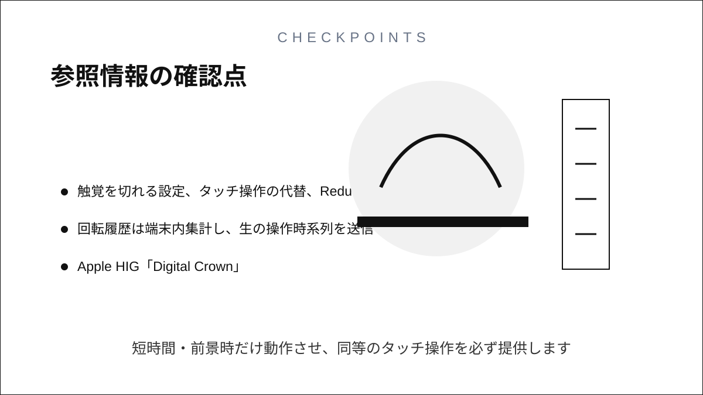

Question Note
Digital Crownで巻く「腕時計からくり」アプリ事業案



中心となる楽しさ
困りごとを解くのではなく、腕時計の物理的な竜頭を回す指先と、画面内の歯車・ぜんまい・触覚がつながる「小さな機械を所有する感覚」を商品にします。AppleはDigital Crownの回転値、速度、停止をアプリで取得でき、対応機種では回転に触覚フィードバックを返せます。

利用トリガーは電車待ちや休憩前の30秒。玩具を選ぶ → Crownを数回巻く → 10秒のからくりを見る → 歯車を一つ棚へ戻すが中心ループです。Watch本体が主画面、iPhoneは棚の編集と追加パック購入だけに絞ります。
既存体験との差
| 比較 | 本案の価値 | 継続理由 |
|---|---|---|
| 腕時計ゲーム | 勝敗・育成ではなく物理入力との一体感 | 30秒で完結し、疲れない |
| 動画・壁紙 | 自分の回転量と速度で動きが変わる | 同じ玩具にも小さな個体差が出る |
| フィジェット玩具 | 持ち物を増やさず常に腕にある | 触覚と収集棚が残る |
紙は動かず、動画は手応えがなく、チャットや表計算はこの体験を提供できません。利用者は広告なし、精密な触覚調整、季節ではなく機構別の追加玩具に支払います。
サービス機能
- Digital Crownの回転量・速度・停止に同期するぜんまい操作
- 歯車、カム、振り子、羽根など週替わりの機構
- 1日3回までの静かな触覚と短いアニメーション
- iPhoneの収集棚、色覚・触覚強度・左手装着設定
- クラウド同期、購入復元、端末内のオフライン動作
100万円規模の収益
Apple Watch利用者の小さな有料層へ、850人 × 年額960円 + 680機構パック × 300円 = 売上1,020,000円。無料版3玩具から年額版24玩具へ移行し、追加パックは所有感を壊さない買い切りにします。
システム要件
- watchOS SwiftUI、Digital Crown、標準触覚、60fpsを目標にした軽量描画
- iPhone companion、WidgetKit、StoreKit、Cloud同期
- 触覚を切れる設定、タッチ操作の代替、Reduce Motion対応
- 回転履歴は端末内集計し、生の操作時系列を送信しない
AWSシステム要件と支出
東京リージョン、無料枠・クレジット除外、1 USD = 155円。公開前にAWS Pricing Calculatorで再計算します。
| AWS | 用途 | 想定 | 月額 | 年額 |
|---|---|---|---|---|
| S3 + CloudFront | 玩具定義・軽量素材配信 | 15GB、月10万配信 | 1,300円 | 15,600円 |
| Cognito | 任意同期アカウント | 1,500 MAU | 1,500円 | 18,000円 |
| API Gateway | 棚・購入復元API | 月20万req | 700円 | 8,400円 |
| Lambda | 同期、配信判定、匿名集計 | 月20万実行 | 900円 | 10,800円 |
| DynamoDB | 匿名ユーザーID、所有玩具、棚順、同期版、購入権利、設定、クラッシュ影響バージョン | 4万件、on-demand | 1,300円 | 15,600円 |
| SES | サポート・購入復元案内 | 月1,000通 | 300円 | 3,600円 |
| CloudWatch | APIエラー・配信監視 | 月3GB | 800円 | 9,600円 |
| AWS Backup | 設定・権利データ保全 | 月10GB | 500円 | 6,000円 |
| AWS Budgets | 予算超過通知 | 2予算 | 200円 | 2,400円 |
| Route 53 | サポートサイトDNS | 1 zone | 100円 | 1,200円 |
| 合計 | AWS利用料 | 7,600円 | 91,200円 | |
開発、人員、利益
AIでSwiftUI画面、状態機械、素材変換、テストのたたき台を作り、体験設計2週、試作3週、本実装5週、実機触覚調整3週の13週。1人が企画・実装・運営を担当し、機構アニメーション18万円、サウンド4万円、アクセシビリティ・実機QA10万円を外注します。
支出はAWS 91,200円、Apple Developer Program等2万円、外注320,000円、マーケティング180,000円、予備費80,000円で691,200円。売上 - 支出 = 利益より1,020,000円 - 691,200円 = 328,800円です。
最初の実証とリスク
3種類の機構を20人に7日間試してもらい、再訪率、1回の利用秒数、触覚OFF率、バッテリー影響を測ります。触覚乱用、Crownの標準ナビゲーションとの競合、電池消費が主リスクです。短時間・前景時だけ動作させ、同等のタッチ操作を必ず提供します。
参照情報
- Apple HIG「Digital Crown」
- Apple Developer「digitalCrownRotation」
- Apple Developer「Creating a widget extension」
- AWS料金
